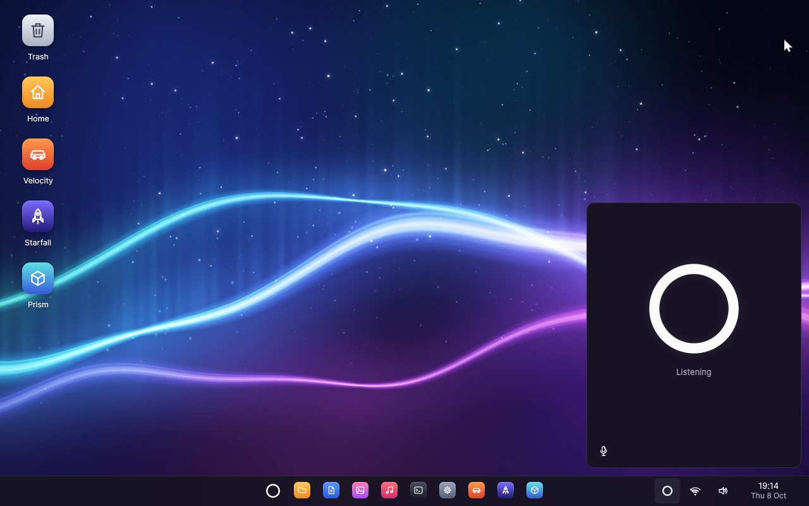
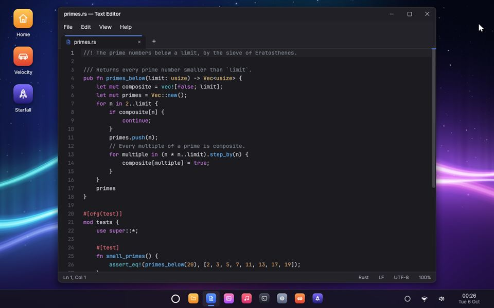
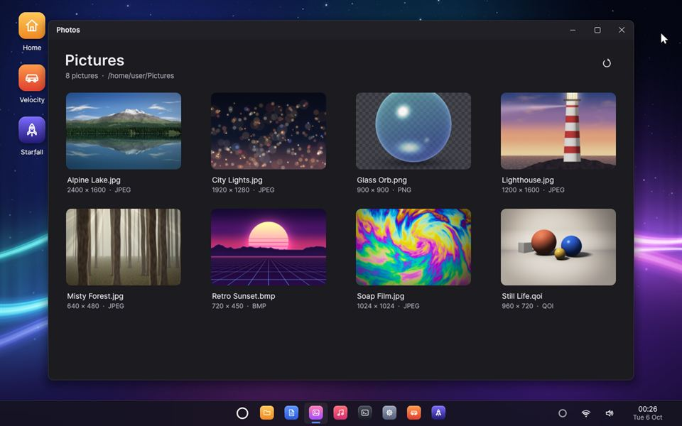
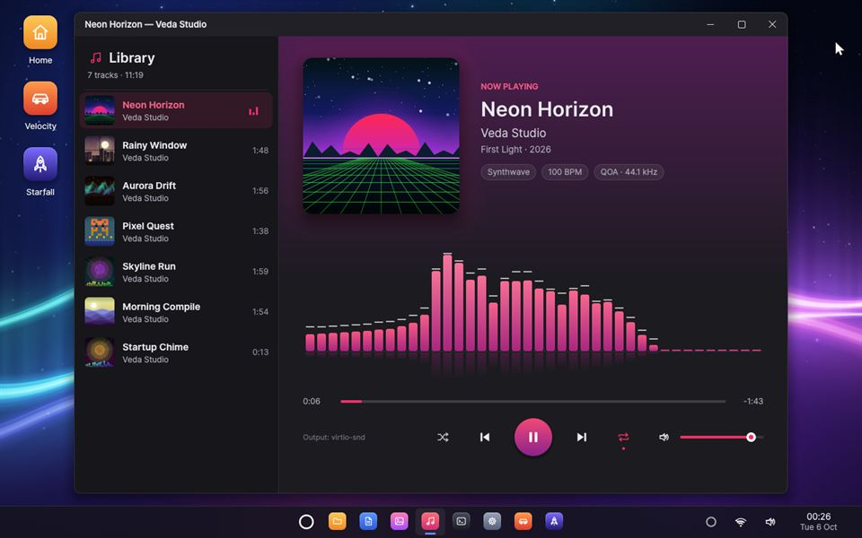
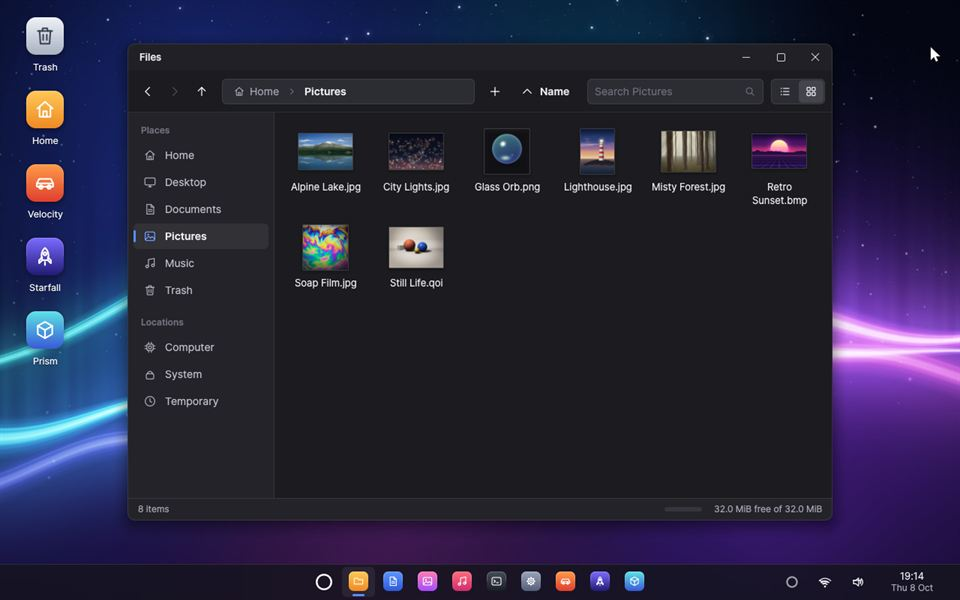
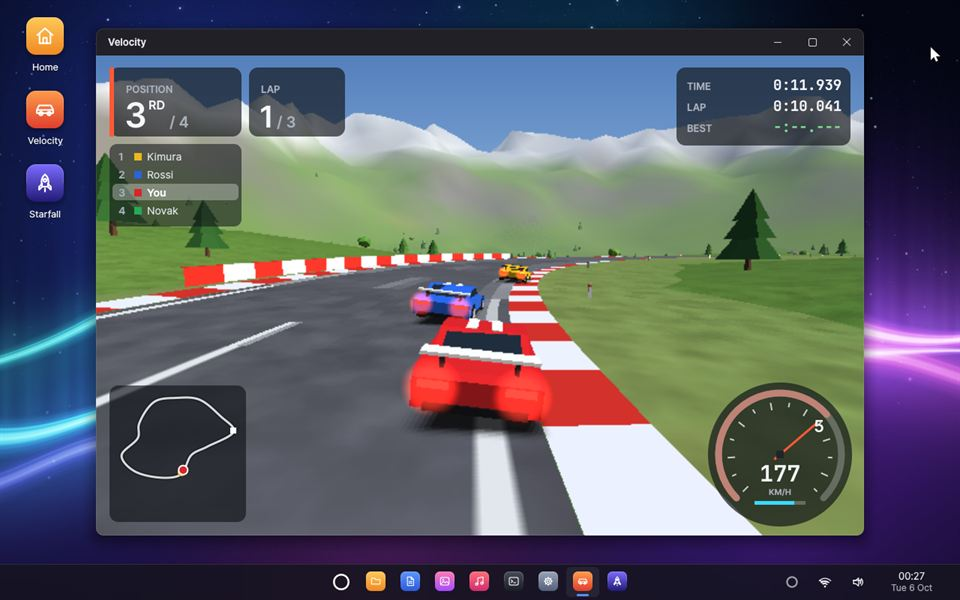
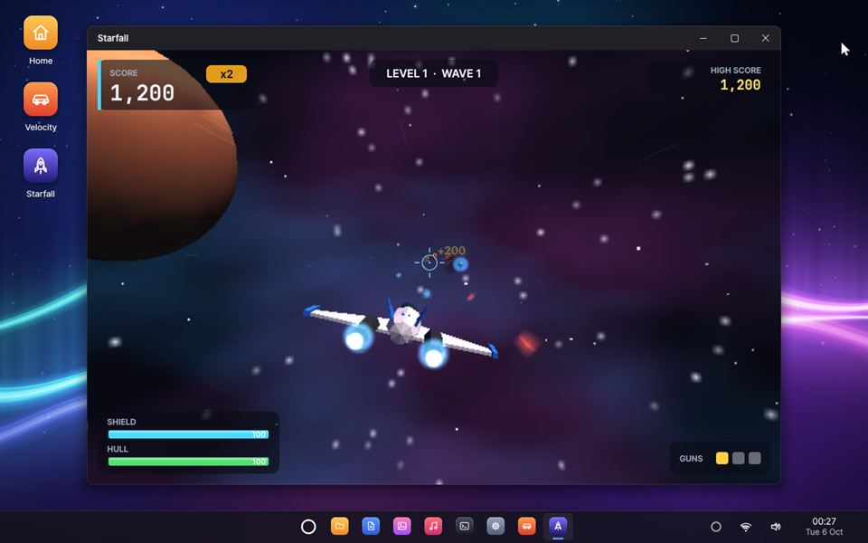
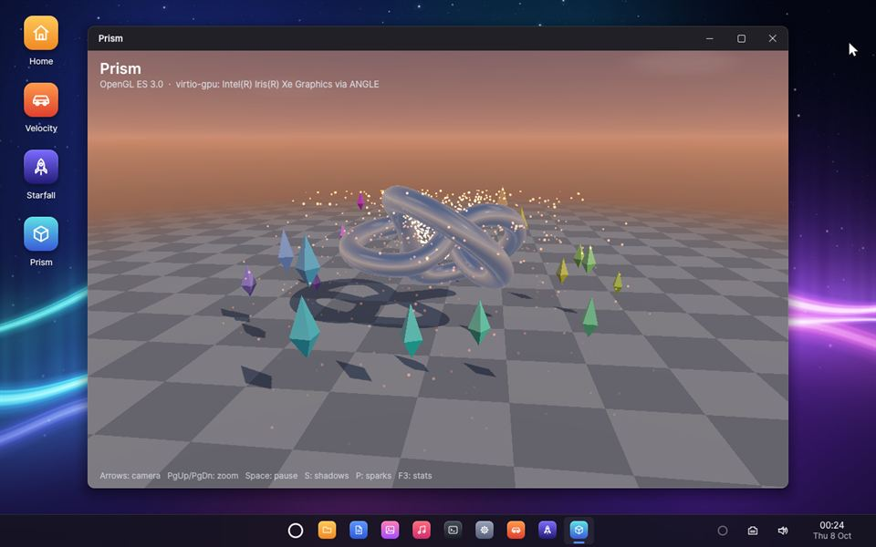
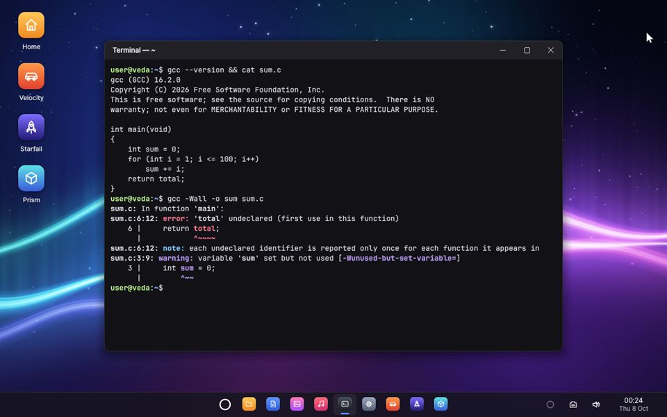

Veda, The agentic-native operating system
A computer you can simply talk to. Ask for what you need and Veda gets it done, in any app — checking with you before anything you can’t undo.
Meet Veda
Most computers wait for your clicks. Veda listens, understands and does the work for you.
Veda is a new kind of operating system, with an AI agent at its heart — not an assistant added to a desktop, but a part of the system that every app is made to work with. You talk to it the way you would talk to someone in the room: “Hey Veda, switch my wallpaper to the dunes.”
- Voice firstA real-time conversation. Interrupt it, and it stops and listens.
- At home in every appIt works through the apps themselves, so you see every step happen.
- On your sideIt asks before anything that is hard to undo.

Agentic AI, in plain words
A chatbot tells you how.
An agent does it.
Agentic AI is software that can act for you: it understands what you want, plans the steps and carries them out. Veda is an operating system built around that idea — so its agent can use every app, reliably and safely.
You ask
Say what you need in your own words, the way you would ask a person.
It plans
Veda works out the steps, and which apps can do them.
It acts
It uses those apps just as you would — and you see it happen on screen.
You decide
Anything that is hard to undo waits for your OK.
Try it
Pick a request, and watch how Veda handles it — from listening, to working in the apps, to asking you when it matters.
A simulation in your browser. In Veda, you simply talk.
Say “Hey Veda”
Bringing it to life
Add a key. Watch it wake.
Enter your voice key in Settings, and Veda comes alive: a spinning ribbon of light — a nod to the film Her — turns to face you, and becomes the ring that listens for its name.
“Hey Veda.”
Call it by name, tap the ring on the taskbar, or press Super + Space. It wakes, listens and answers — and you can interrupt it any time, just as you would a friend.
Agentic-native apps
Every app
speaks agent.
Each Veda app tells the agent what it can do — and does it through the same code as your mouse and keyboard, so the window shows the result exactly as if you had done it yourself. No screen reading, no simulated clicks: more than 70 actions across the built-in apps.
Text Editor
“Write a shopping list with eggs, milk and coffee.”
Tabs, syntax highlighting, find and replace, unlimited undo.
Photos
“Show me the lighthouse photo, full screen.”
Your picture library, with zoom, slideshows and wallpapers.
Music
“Play Neon Horizon.”
Your songs with cover art and a live spectrum visualiser.
Files
“Move the trip photos into Documents.”
Copy, move, rename, search — and a Trash to restore from.
Task Manager
“What’s using the most memory?”
Programs with their CPU and memory use, and live graphs.
Settings
“Speak a little slower.”
Wallpapers, Wi-Fi, and the agent’s name, voice and memory.
Terminal
“Check the network with a ping.”
About fifty built-in commands, and C programs compiled with GCC.
Velocity
“Start a race in Velocity.”
Arcade 3D racing against computer opponents.
Starfall
“Start a new game of Starfall.”
A 3D space shooter through asteroid fields and enemy waves.
Prism
“Open Prism.”
OpenGL ES 3.0 at work: reflections, shadows and a fountain of sparks.
Apps installed later join in on their own: the agent reaches every app the same way.
Safety & privacy
Helpful, and always
on your side.
An agent that can act needs firm limits. In Veda they are built into the system itself — not left to the AI to remember.
Routine
Looking, opening, playing, creating something new.
Just happensSensitive
Replacing a file, moving things to the Trash, running a command.
Waits for your OK — unless you choose “Always allow”Destructive
Emptying the Trash, ending a program, shutting down.
Asks you every single time
Under the hood
Built from scratch.
Every layer.
From the moment your PC starts to the apps on your screen, Veda is its own: the bootloader, a microkernel, the drivers, the window system, the apps and the agent — written in Rust, in one open repository.
- Youvoice · keyboard · mouse
- Agent & desktopconversation · memory · consent · the ring
- Appsactions · state · the same code as your clicks
- Serviceswindows · files · audio · network · Wi‑Fi
- Microkernelcapabilities · isolation · scheduling
A microkernel
Drivers and services run isolated from each other. If the window system crashes, it restarts and the desktop comes back on its own.
A desktop composed on the GPU
Smooth animations, window snapping and live thumbnails — every frame shown whole on Intel graphics.
Made for voice
Echo cancellation so the agent never hears itself, and music that dips while you talk.
Wi-Fi and the web
WPA2 and WPA3 Wi-Fi, IPv4 and IPv6, and TLS 1.3 for secure connections.
3D graphics
OpenGL ES 3.0 on the GPU — or a fast software renderer where there is none.
C and GCC inside
Write C programs and compile them with GCC, right in Veda.
Your files, kept safe
A home folder on its own disk, with crash-safe snapshots — and a Trash.
Runs where you are
On a real PC from a USB stick, or in QEMU and VirtualBox.
A look inside
A desktop that
feels alive.








Questions
Questions, answered.
What is Veda?
Veda is an operating system — like Windows or macOS — with an AI agent built into it. You ask it to do things by voice, and it carries them out in its apps, checking with you first before anything that is hard to undo.
What does “agentic-native” mean?
Most AI assistants are added on top of a system designed for clicks, so they have to read the screen and imitate a mouse. Veda was designed for an agent from the start: every app tells the agent what it can do and does it reliably, and the system itself enforces your consent.
Is Veda free?
Yes. Veda is free, open-source software, released under the GNU General Public License version 3. Its complete source code is on GitHub.
Can I try it on my computer?
Today Veda runs in a virtual machine (QEMU or VirtualBox) on Windows, or on a real PC from a USB stick, where it runs from memory and never touches your disks. It is a young project, so hardware support is still limited. The guide on GitHub shows how to build and start it with one command.
What do I need to talk to it?
A microphone, speakers, and an API key for Deepgram, the voice service Veda uses for speech recognition, its language model and its voice. You enter the key in Settings, on the Agent page. Your audio is opted out of Deepgram’s model improvement.
Is it always listening?
While it sleeps, a voice detector runs on your computer, and nothing leaves the computer while nobody speaks. Veda wakes when you call its name, tap the ring on the taskbar or press Super + Space, and goes back to sleep when you say goodbye.
Can the agent do things without asking?
Only routine things that are easy to undo, such as opening an app or playing a song. Anything that matters waits for your OK, and anything destructive — like emptying the Trash — is asked about every time. Veda’s system enforces this, not the AI model.
How can I get involved?
Explore the code, open issues and follow the work on GitHub, or write to contact@vedaos.org.
Open source, from the first line.
Read the code, build Veda with a single command, and try it in a virtual machine — or on a real PC, from a USB stick.
cargo xtask runQuestions or ideas? Write to contact@vedaos.org